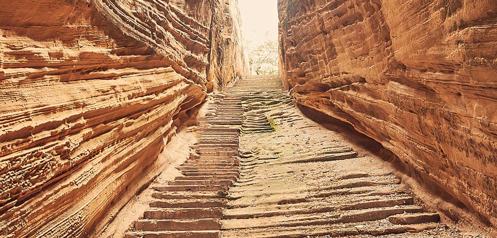

These two stepwells inside Uparkot, are highly unusual forms of stepwells, very different from wells in other parts of Gujarat. Most wells are dug through various kinds of subsoils and rock layers, and stone columns, floors, stairs and walls are built much like they would be in above-ground construction. In the case of these two, the spaces of the well itself were carved out of stone, leaving the structure of the well (the columns, the walls, etc.) out of the original rock. This means no structural construction is done, so the whole structure of the well is hewn out of a single stone.
Adi-kadi Vav, built in the 15th century, is carved entirely out of hard rock. A narrow flight of 120 stairs cuts down through the stone to meet the well shaft deep in the stone. Two different legends claim to explain the name of the well. One says that the king ordered a stepwell to be built and workers excavated down into this hard stone, but no water was found. The royal priest said that water would only be found if two unmarried girls were sacrificed. Adi and Kadi were the unlucky ones chosen for this and after their sacrifice, water was found. The other story, less fantastic but probably more likely, claims that Adi and Kadi were the names of the royal servant girls who fetched water from the well every day. Either way, people still hang cloth and bangles on a tree nearby in their memory.

How to Get There?
By Road
Private and state bus services are available from different junctions in the state.
By Train
The town has a railway station that is connected to major cities in Gujarat.
By Air
The closest airports to Junagadh are Keshod (40 km) Porbandar (104 km) and Rajkot (105.3 km).